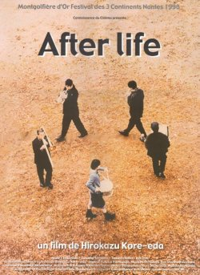
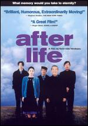

| |
14. August 2006
After Life (Jap 1998)

"Sie wissen, warum Sie hier sind." - "Ja." - "Sie sind gestern gestorben." - "Ja." - "Herzliches Beileid." - "Vielen Dank." Sie verneigt sich leicht und lacht etwas schüchtern.
Ein typischer Kore-eda ("Nobody knows", Personale Viennale 2004). Klein und fein, eine simple Idee, schnörkellos dramatisiert. Stell dir deinen schönsten Moment vor, nur den darfst du behalten. Du darfst ihn sogar verfilmen. Das Filmteam im Himmel hat allerhand zu tun.
Im Limbo, am Tor zum Paradies, muss jede Seele eine Erinnerung wählen, die sie als ewige Identität behalten möchte. Da verbringt jeweils eine Gruppe kürzlich verstorbener Menschen eine Woche damit, den entscheidenden Augenblick im eigenen Leben zu bestimmen. Angeleitet und begleitet werden die Leute unterschiedlichen Alters dabei von Toten, die es selber noch nicht geschafft haben, ihre eigene liebste Erinnerung zu wählen. Ziel des individuellen Nachdenkens ist es, in der zweiten Hälfte einen Kurzfilm zu drehen über die ausgewählte Szene. Daraus ergibt sich eine wahrhaft universelle Geschichte, die den mehrdeutigen Charakter des menschlichen Gedächtnisses untersucht, den Ort, an dem sich Realität und Fiktion vermischen. Höchstens im Leben selber geschieht das intensiver als im Kino. Das ist ein Film, der zwischen Erde und Himmel schwebt.
Kore-eda kommt vom Dokumentarfilm und das merkt man auf Schritt und Tritt. Viele der Darsteller sind Laien, viele der Erinnerungen (der Laien wie im übrigen auch der professionellen Schauspieler) sind "authentisch", sichtlich nicht auf Rührungseffekte hin zurechtgelegt, ja zum guten Teil: schlicht und einfach banal. Auch die Kamera, die viel still hält in langen Einstellungen, liebt vor allem Talking Heads, es ist, hier und auch sonst nicht, fast kein narrativer Luftzug in diesem Film zu spüren, der die eine Woche, in die er die allmähliche Verfertigung der ewigen Erinnerung packt, ohne Hast abschreitet. Mehr... - Ekkehard Knörer, jump-cut
This film, written and directed by Hirokazu Koreeda, gets an "A" (in my book) for conceptual creativity. Afterlife (also known as Wandafuru raifu or "Wonderful Life") truly challenges its audience (as well as its characters) to ponder deeply the meaning of life and death. The story is set in what one might call "limbo", although here this consists of an entire world which looks, feels and is populated exactly as the real world. The characters, however, are all deceased and we accompany them through their first seven days of this "limbo" during which they must decide on only one memory from their life with which they will spend the rest of eternity. While the many characters wrestle with isolating a single significant memory from among many, or from among none, we in the audience will inevitably begin thinking along these same lines, searching for criteria whereby some past moments are deemed more valuable than others. Should a "fun" moment be prioritized above a "serene" moment? Or how about the moment of sexual ecstacy or the moment of secure love? ...[sarudama.com]
When we say we "remember" something, what exactly is it we recall? A feeling? A smell? Words? Facial expressions? Invited to relive an especially happy memory, how many of us would be able to go beyond recalling how we felt, and describe the setting and circumstances of that moment in precise detail? And even when we conjure vivid mental pictures of past events, how accurate are they really?
These and other profound questions are the substance of Hirokazu Kore-eda's brilliant, humorous, transcendently compassionate film, "After Life". The Japanese director achieved international recognition four years ago with "Maborosi", an exquisitely photographed story of a young woman coming to terms with her husband's unexplained suicide.
Where that film found the very essence of sadness in the color, light and shadow of Japanese landscapes and in images of a world viewed from a distance through a screen of muted grief, "After Life" is a movie of ideas whose visual surface is deliberately mundane. - Stephen Holden - New York Times
 Like his previous drama Maborosi (1995), Hirokazu Kore-eda's "After Life" is a brilliant meditation on death and memory. The premise of After Life is simple: over the span of a week, twenty-two souls arrive at a way station (which looks like an old junior high school) between life and death, where they are asked to choose just one memory to take into the afterlife. The new arrivals include an elderly woman, a rebellious dropout, a teenage girl, and a 70-year-old war veteran. Once they have chosen a memory, it is recreated and filmed by the staff of the way station, using all the tricks and illusions of cinema: cotton balls are used to mimic clouds, a fan is used for a summer breeze. In preparation for this project, Kore-eda interviewed 500 people from all walks of life about their memories. The film freely cuts between footage of these interviews, actors improvising, and actors reading scripts. Just as Kore-eda fuses documentary elements with a fictional narrative, we see over the course of the film how memories are distorted, improved on, and revised; and it is these subjectively constructed memories that the new arrivals value most. This film is not a typical Hollywood feel-good film; but its unhurried pace and lack of melodrama, like its subject, may linger in the memory long afterwards. ~ Jonathan Crow, All Movie Guide
Festivalpreise:
Preise in San Sebastián, Toronto, Buenos Aires, Torino, Nantes,
Mainichi, Bitola (Mazedonien)
"Wandafuru Raifu" Jap 1998, B+R: Hirokaze Kore-eda. 118min, jap.meUT
19:30 Uhr, Space04 Kunsthaus Graz, € 5.-
- [official site]
- [imdb] 7.7/10 (2,083 votes)
- [allmovie.com]
- [jump-cut kritik]
- [rapid-eye movies background]
- [sarudama.com]
- [nytimes.com]